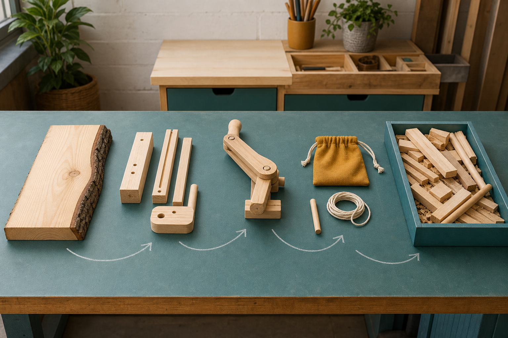
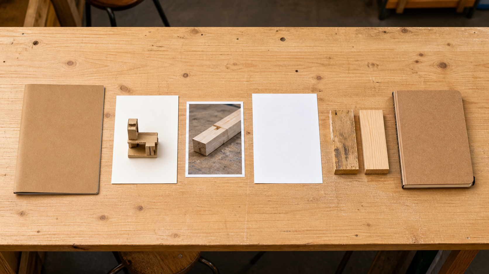
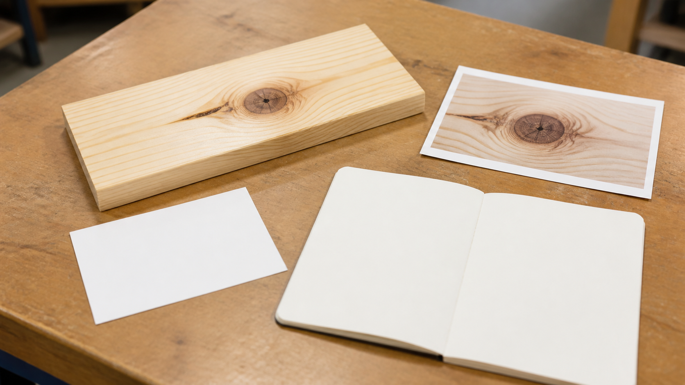
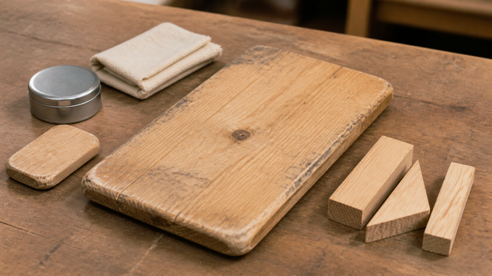

The conclusion is just the introduction written again.
A conclusion answers the problem using the evidence and reasoning developed in the report.
Module 9 of 10
An engineering report explains what problem was addressed, what decisions were made, what evidence was collected and what should happen next. Sustainability belongs throughout that explanation because materials, processes and products affect environments, people and resources over time. Strong reports are honest about trade-offs and limits.
Use this page to learn and prepare. Follow your teacher's demonstration, approved tools, local safety controls and testing instructions for every practical action.

Theory 1 of 3
A short engineering report can follow a clear sequence: problem or brief, design decision, production evidence, test method, results, discussion, sustainability and conclusion. Each part has a job. The brief sets the problem and boundaries. The design decision explains why a concept was selected. Production evidence records meaningful changes. Results show what happened, while the discussion explains why it matters.
The conclusion answers the original problem using the strongest evidence. It should not introduce a new test or claim that was never discussed. A useful report also states limitations, such as a small number of trials or an unresolved source of variation. This does not weaken the report. It shows the writer understands how confident the conclusion should be and what further evidence would be worthwhile.
Knowledge check
Choose an answer, read the feedback, then try again if needed. This is saved as practice on this device.

Theory 2 of 3
A claim is a focused answer or judgement. Evidence is the selected observation, measurement, drawing, photograph or production record that supports it. Reasoning explains the connection using engineering knowledge. For example, a material-choice claim should not stop at pine is easy to use. It should connect observed grain, condition, workability or performance to the function and approved processes required by the project.
Good evidence is relevant and specific. A folder full of photos is not automatically strong evidence if none shows the feature being discussed. Select the clearest item, label what it shows and explain why it matters. When evidence conflicts, acknowledge the conflict and consider whether another variable, measurement limitation or system interaction could explain it. Engineering reports gain credibility from careful interpretation, not exaggerated certainty.
Knowledge check
Choose an answer, read the feedback, then try again if needed. This is saved as practice on this device.

Theory 3 of 3
Environmental sustainability considers resource use, responsible sourcing, waste, energy, repair and end-of-life options. Social sustainability considers effects on people, including access, safety, knowledge and community needs. Economic sustainability considers cost, time, maintenance and whether resources are used effectively. These areas interact, so a decision that helps one area may create a cost or challenge in another.
Calling a material natural, reusable or recyclable does not prove that a whole solution is sustainable. Engineers examine the life cycle: where materials come from, how they are processed, how efficiently they are used, how long the product can serve its purpose, whether it can be repaired, and what may happen at the end. A defensible judgement names the available evidence and avoids unsupported green claims.
Knowledge check
Choose an answer, read the feedback, then try again if needed. This is saved as practice on this device.

Worked example
Vocabulary
Common traps
A conclusion answers the problem using the evidence and reasoning developed in the report.
Sustainability depends on sourcing, material efficiency, processes, lifespan, repair, waste and social and economic effects.
Video learning · 2:38
ForestLearning
Watch for: Which steps make a plantation timber cycle renewable, and which environmental impacts are not answered by this promotional overview?
Source boundary: Industry education perspective; renewable and sustainable are claims to evaluate, not automatic conclusions.

Use the full-life-cycle diagram and separate the source’s claims from evidence still needed about land, processing, transport, use, repair and end of life.
The privacy-enhanced player loads only when you choose it.
Applied Learning Activity
Practise organising project evidence into a concise engineering report and balanced sustainability judgement.
Evidence to save: Report sequence, repaired CER statement and sustainability discussion, saved as formative practice.
Type the response, reasoning or record requested above. It autosaves in this browser.
Use: ‘I claim ___. My evidence is ___. This matters because ___. A limitation is ___.’
Compare repair and replacement as end-of-life decisions and state what evidence would be needed before recommending either.
Higher-order evidence
Use your design journey to justify one material or production decision and evaluate its sustainability without making an unsupported ‘green’ claim.
Type your response. No drawing is required. It autosaves in this browser.